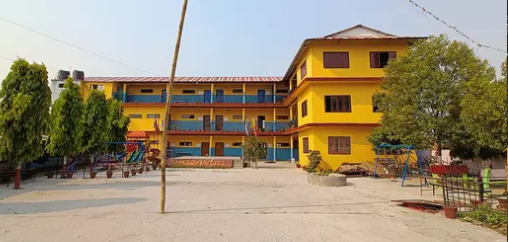

        }
        .info{
            border: 2px solid red;
            padding: 20px;
            margin: 10px;
        }
        b{
            color: red;
            font-size: 20px
        }
        img{
            width: 100%;
        }
    </style>
</head>
<body>
    <center>
       <h1 class="welcome">Welcome To Our School website</h1>
       <h3 class="top">Project work done by <span>"Nischal Adhikari"</span></h3>
        
        <h1>About Our School</h1>
        <hr>
        <p>    Nawayug English School is a leading educational institution in Chitwan, Nepal. Located in Bharatpur-6, Kesharbag, the school offers classes from Montessori to Class 10. The school is headed by Mr. Ganesh Thapa, who has over 20 years of experience in education.  Nawayug English School is committed to providing quality education to its students. The school has a well-qualified and experienced faculty, who use modern teaching methods to ensure that students learn effectively. The school also has a well-equipped infrastructure, which includes spacious classrooms, a library, a computer lab, and a playground.  Nawayug English School is the best education sector all over Chitwan. The school has a strong academic reputation and its students consistently perform well in national examinations. The school also has a strong extracurricular program, which offers students the opportunity to participate in sports, arts, and cultural activities.</p>
        <br>
